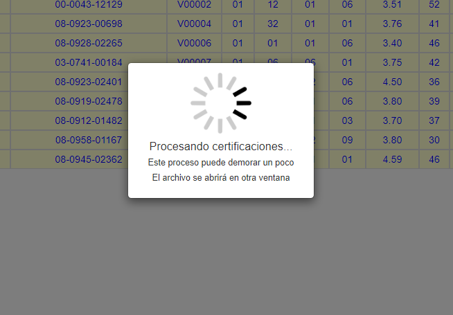

Artículos de Ayuda!
Creado por : Renold González - Ultima modificación : 11-08-2019
¿Cómo Generar Certificaciones?
-
Paso 1
Localice en el menú el apartado "Certificación" y haga clic sobre este

-
Paso 2
Seleccione como desea mostar la data en este apartado, utilice los "Filtros de Datos" y presione Filtrar (Botón en color celeste).

Espere mientras el sistema carga los datos!
-
Paso 3
Una vez cargada la información deseada , puede presionar el boton a su derecha "Icono de lapiz" para editar un registro en particular o presionar el boton de "Basurero" en rojo para eliminarlo.

-
Paso 4
Seleccione los regitros a los cuales requiera crear un nuevo documento de Certificación y presione sobre el botón "Generar Certificaciones".
-
Paso 5
Seleccione el Tipo de Certificación que desea generar y presione "Continuar".

Espere mientras el sistema genera el documento!
 -
Paso 6
El sistema le mostrará una señal indicando que el procedimiento se completo.

El sistema abrirá una venta externa con el archivo generado en donde se podrá descargar o imprimir la(s) certificaciones que requiera.